Disposer d'une première approche des concepts techniques, pour comprendre la sécurité des réseaux;
Comprendre quels sont les mécanismes qui permettent de sécuriser un réseau (garantir la fiabilité et la confidentialité des données grâce aux différentes sécurisantes).
Pouvoir évaluer les risques internes et externes liés à l'utilisation des réseaux informatiques.
La structure du cours est :
Théorie : comprendre l'architecture des réseaux (architectures, normes et protocoles) et comprendre les attaques réseau.
Pratique (Labo) : mise en place et sécurisation des réseaux.
Pour l'examen, on a 40% de théorie QCM, 20% des trois laboratoires et 40% d'oral.
Installez GNS3 VM et prenez la version de VMware même avec VirtualBox.
Décompressez l'archive ZIP et lancez le fichier contenu dans le dossier dézippé dans VirtualBox ou VMWare.
Dans VirtualBox ou VMWare, sélectionne la "GNS3 VM" et va dans "Configuration → Réseau" pour cocher "Activer la carte réseau" en mode d'accès réseau NAT.
On peut ajouter une deuxième carte réseau optionnelle mais recommandée avec l'Adapter 2 en mode "Host-only Adapter". Cela améliore la communication avec l'hôte.
On doit aussi mettre minimum 4096 MB de mémoire et minimum 2 processeurs.
Vous pouvez essayer de lancer la VM pour vérifier que tout fonctionne.
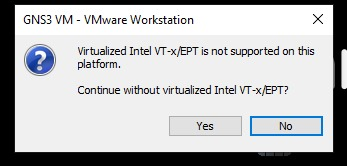
Si vous avez cette erreur lors du lancement de votre machine virtuelle, ça signifie que Hyper-V monopolise la virtualisation et donc GNS3 ne peut plus l'utiliser. Pour désactiver Hyper-V sous Windows, on peut taper la commande suivante dans un terminal en mode administrateur et redémarrer l'ordinateur :
bcdedit /set hypervisorlaunchtype off
Pour vérifier si Hyper-V tourne ou pas, toujours en mode administrateur, on a la commande :
systeminfo | find "Hyper-V"
Si vous voulez réactiver Hyper-V sous Windows, toujours en mode administrateur et redémarrer après avoir fait la prochaine commande :
bcdedit /set hypervisorlaunchtype auto
Hyper-V "monopolise" la virtualisation parce qu'il remplace complètemeent le gestionnaire de virtualisation matériel de Windows. C'est un hyperviseur de type 1, exactement comme VMWare ESXi ou Proxmox.
C'est-à-dire que, quand Hyper-V est activé, Windows ne tourne plus directement sur le matériel, mais Hyper-V démarre en premier, Windows devient une VM spéciale appelée "partition parente" et Hyper-V obtient 100% du contrôle du CPU, de la RAM et surtout de Intel VT-x / AMD-V.
Donc, les autres hyperviseurs n'y ont plus accès car les instructions de virtualisation matérielle (VT-x / VT-d / AMD-V) ne peuvent être utilisées que par un seul hyperviseur à la fois.
Dans l'onglet "Edit > Preferences > GNS3 VM", cochez "Enable the GNS3 VM", sélectionnez "VirtualBox" dans "Virtualization engine" et sélectionnez la VM dans "VM name" dans "Settings".
Pour utiliser Cisco IOU sous Windows, il faut avoir la GNS3 VM car IOU ne tourne pas directement sous Windows.
scp est un outil OpenSSH (Secure Copy Protocol), historiquement disponible sous Linux / Mac OS. Windows ne l'a pas intégré avant très récemment.
Voici le fichier `CiscoIOUKeygen3f.py` qu'il faudra copier avec scp :
#!/usr/bin/python3
print("*********************************************************************")
print("Cisco IOU License Generator - Kal 2011, python port of 2006 C version")
import os
import socket
import hashlib
import struct
# get the host id and host name to calculate the hostkey
hostid = os.popen("hostid").read().strip()
hostname = socket.gethostname()
ioukey = int(hostid,16)
for x in hostname:
ioukey = ioukey + ord(x)
print("hostid = " + hostid +", hostname = "+ hostname + ", ioukey = " + hex(ioukey)[2:])
# create the license using md5sum
iouPad1 = b'\x4B\x58\x21\x81\x56\x7B\x0D\xF3\x21\x43\x9B\x7E\xAC\x1D\xE6\x8A'
iouPad2 = b'\x80' + 39 * b'\0'
md5input = iouPad1 + iouPad2 + struct.pack('!i', ioukey) + iouPad1
iouLicense = hashlib.md5(md5input).hexdigest()[:16]
print("\nAdd the following text to ~/.iourc :")
print("[license]\n" + hostname + " = " + iouLicense + ";\n")
with open("iourc.txt", "wt") as out_file:
out_file.write("[license]\n" + hostname + " = " + iouLicense + ";\n")
print("^^^^^^^^^^^^^^^^^^^^^^^^^^^^^^^\nAlready copy to the file iourc.txt\n ")
print("You can disable the phone home feature with something like:")
print(" echo '127.0.0.127 xml.cisco.com' >> /etc/hosts\n")
Ce script calcule une licence IOU ("Cisco IOU License"). En résumé, le script calcule une clé de licence à partir de l'hostid et du hostname de la machine, en combinant ces valeurs avec des constantes (pads) puis en prenant les 16 premiers caractères du MD5 du bloc construit. Il affiche la ligne de licence à ajouter dans ~/.iourc et la copie aussi dans iourc.txt. Enfin, il propose une méthode pour bloquer le "phone home" en modifiant /etc/hosts.
Voici les prochaines étapes à réaliser :
Dans PowerShell 7, copiez ce fichier depuis Windows vers la GNS3 VM avec scp :
Il faudra penser à modifier dans la commande précédente le chemin vers le fichier Python et l'adresse IP de la GNS3 VM.
Le mot de passe par défaut de la GNS3 est gns3.
Connectez-vous à la GNS3 :
ssh gns3@192.168.56.102
Ouvrez le shell dans la GNS3 VM et allez dans le bon répertoire :
cd /home/gns3
Lancez le script Python :
python3 CiscoIOUKeygen3f.py
Éditez le fichier `.iourc` :
nano /home/gns3/.iourc
Voici le contenu à mettre dans le fichier :
[license]
GNS3 VM = 73677fd3b0a13ad0;
Remplacez bien la clé par celle générée sur ta VM.
Pour sauvegarder dans Nano, on doit faire CTRL + O → Entrée et CTRL +X pour quitter.
Dans l'onglet "Edit > Preferences > IOS on UNIX", copiez y la licence IOU.
Dans mon répertoire `C:\Users\driss\Desktop\Network Security\ImagesIOU`, j'ai mis toutes les images .bin téléchargées. Voici ma liste de fichiers .bin :
Pour l'instant, ce sont des images IOU L2 (switch) et des images IOU L3 (routeur).
Dans l'onglet "Edit > Preferences > IOS on UNIX > IOU Devices", choisissez "New".
Choisissez "Run this IOU device on the GNS3 VM".
On "browse" le fichier .bin de l'image L2 ou L3 dans la "New Image" avec un nom pour chaque image, comme par exemple "Cisco L2 15.1a".
N'oublies pas d'"Apply" tous les changements.
Modèle OSI - 7 couches :
Le modèle OSI (Open Systems Interconnection) est un cadre de référence conceptuel qui permet de comprendre et de normaliser les communications entre différents systèmes informatiques.
Ce modèle est organisé en sept couches, chacune ayant un rôle précis dans le processus de transmission et de réception des données sur un réseau.
Chaque couche fournit un ensemble de fonctions à la couche supérieure et, à son tour, s'appuie sur les fonctions fournies par la couche inférieure.
Bien que les messages ne puissent passer verticalement à travers la pile d'une couche à l'autre, d'un point de vue logique, chaque couche communique directement avec sa couche homologue sur d'autres noeuds.
Les sept couches du modèle OSI sont :
Physique : transmission de bits sur le matériel physique.
Liaison de données : encadrement/encapsulation des unités d'information et contrôle des erreurs.
Réseau : livraison de paquets, y compris le rouage.
Transport : fourniture d'une livraison fiable ou non fiable de bout en bout.
Session : établissement et maintien de sessions.
Présentation : formatage des données et cryptage.
Application : les applications réseau telles que l'émulation de terminal (Telnet) et le transfert de fichiers (FTP), HTTP.
OSI - Couche physique (couche 1) :
Rôle : La couche physique est responsable de la transmission réelle des bits sur le réseau via des câbles, signaux radio, fibre optique, etc.
Processus : Les trames sont converties en signaux électriques, optiques, ou radiofréquences, qui sont ensuite transmis sur le support physique. La couche physique assure la transmissiondes bits entre les deux dispositifs connectés.
Rôle : Cette couche asure la communication directe entre deux dispositifs sur le même réseau local.
Processus : Les paquets sont encapsulés dans des trames et reçoivent une adresse MAC source et une adresse MAC de destination. Les trames sont ensuite envoyées sur le réseau physique, en passant par des switchs et autres dispositifs de réseau.
OSI : Couche réseau (couche 3) :
Rôle : La couche réseau détermine le meilleur chemin pour acheminer les paquets de données à travers le réseau. Elle gère le routage et l'adressage.
Processus : Chaque segment est encapsulé dans un paquet avec une adresse IP source et une adresse IP de destination. Cette couche utilise des routeurs pour diriger chaque paquet vers sa destination finale.
OSI - Couche transport (couche 4) :
Rôle : La couche transport assure la livraison fiable des données en gérant la segmentation et le réassemblage.
Processus : Les données sont segmentées en plus petits morceaux pour faciliter leur transmission. La couche transporte les segmnts et assure que chaque segment arrive bien au récepteur. Le protocole TCP (Transmission Control Protocol) assure une livraison fiable (vérification de l'ordre des segments et des erreurs), tandis que UDP (User Datagram Protocol) offre une livraison plus rapide mais moins fiable.
OSI - Couche session (couche 5) :
Rôle : La couche session gère et synchronise les dialogues entre les applications des deux ordinateurs.
Processus : Une "session" ou connexion est établie entre les ordinateurs émetteur et récepteur pour organiser et maintenir la communication. Cette couche assure que les données (application) sont envoyées dans le bon ordre.
OSI : Couche présentation (couche 6) :
Rôle : Cette couche traduit les données entre le format de l'application et le format utilisé pour la transmission. Elle peut également chiffrer et compresser les données.
Processus : Les données sont converties (par exemple en ASCII, si nécessaire) et peuvent être compressées ou chiffrées. Ensuite, elles sont transmises à la couche session.
OSI - Couche application (couche 7) :
Rôle : C'est la couche la plus proche de l'utilisateur. Elle permet aux applications (navigateurs, logiciels de messagerie, etc.) de communiquer avec le réseau.
Processus : Les données sont converties (par exemple en ASCI, si nécessaire) et peuvent être compressées ou chiffrées à la couche session.
OSI - Communication entre couches :
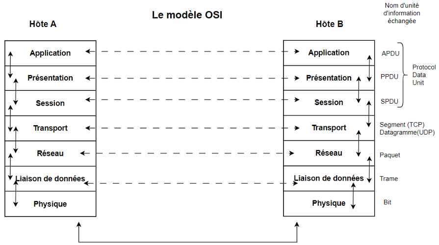
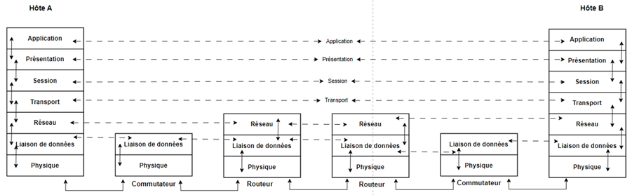
OSI - Encapsulation :
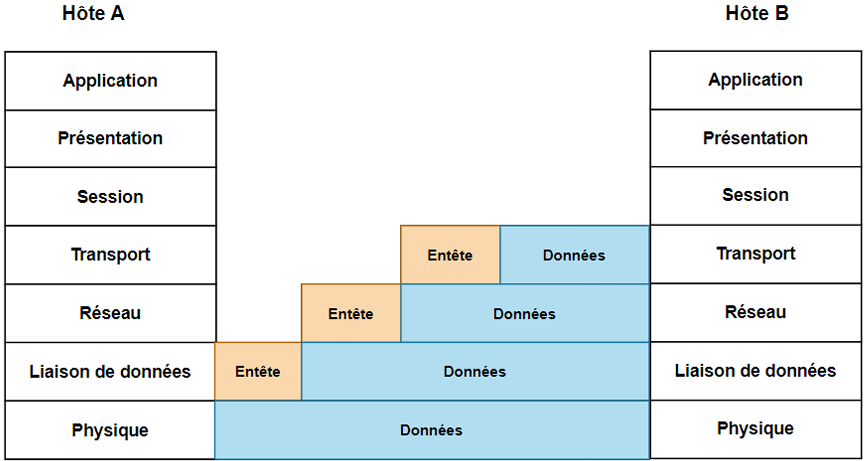
Le modèle TCP/IP :
Il est conçu pour être pratique et largement utilisé dans les réseaux actuels, notamment l'Internet.
Il est également connu sous le nom de "suite de protocoles Internet".
Il est composé de quatre couches :
Accès réseau.
Internet.
Transport.
Application.
Correspondance entre OSI et TCP/IP :
Modèle OSI (7 couches)
Modèle TCP/IP (4 couches)
Application
Application
Présentation
Session
Transport
Transport
Réseau
Internet (Réseau)
Liaison de données
Accès réseau
Physique
Conclusion :
Le modèle OSI est une référence essentielle pour les réseaux.
Comprendre le modèle OSI aide à identifier et résourdre des problèmes réseau.
Bien que OSI ne soit pas directement utilisé, il reste un outil pédagogique clé.
OSI est un modèle théorique, tandis que TCP/IP est un modèle pratique.
TCP/IP regroupe certaines couches du modèle OSI pour plus de simplicité.
Les deux modèles sont complémentaires et restent des outils essentiels pour comprendre et concevoir des réseaux.
Protocoles TCP/IP :
Les protocoles TCP/IP sont :
Interfaces d'interconnexion (Couche OSI 2).
Les protocoles d'interconnexion (Couche OSI 3).
Les protocoles de transport (Couche OSI 4).
Structure d'application TCP/IP (Couche 4 TCP/IP).
Analyse des paquets TCP/IP.
Les interfaces d'interconnexion sont :
Couche liaison de données.
Structure de la trame Ethernet.
Commutateur Ethernet.
Couche liaison de données :
Objectifs et rôle de la couche liaison de données :
Diviser les données en trames.
Fournir une communication directe, fiable, et sécurisée entre deux dispositifs sur le même réseau.
Assurer une connexion sans erreur pour la transmission des trames.
Fonctionnalités principales :
Encapsulation en trames : diviser les données en trames pour une gestion facile.
Contrôle d'erreur : détecter et corriger les erreurs de transmission.
Contrôle de flux : éviter la surcharge des dispositifs en régulant l'envoi de trames.
Accès au média : gère qui envoie les données à quel moment, afin d'éviter les collisions.
Sous-couche de la couche liaison logique (LLC) :
Sous-couches de la couche liaison de données :
Diviser les données en trames.
Fournir une communication directe, fiable, et sécurisée entre deux dispositifs sur le même réseau.
Assurer une connexion sans erreur pour la transmission des trames.
Sous-couche de contrôle d'accès au média (MAC) :
Gère l'accès au média physique et identifie les dispositifs via leur adresse MAC.
Gère les collisions sur les réseaux partagés.
Adresse MAC :
C'est l'identifiant unique pour chaque interface réseau.
Elle est formée de 48 bits, souvent représentée en hexadécimal (par exemple : 00-14-22-01-23-45).
Elle est utilisée par la sous-couche MAC pour identifier les dispositifs au sein d'un même réseau.
Contrôle d'erreur et de flux :
Le contrôle d'erreur utilise des techniques comme le CRC (Cyclic Redundancy Check) pour détecter les erreurs dans les trames.
Le contrôle de flux utilise des protocoles pour réguler le volume des données envoyées, assurant que le récepteur puisse traiter les trames sans surcharge.
Introduction à Ethernet :
Qu'est-ce qu'Ethernet ?
C'est une norme de communication pour les réseaux locaux (LAN).
Cela définit le format des trames utilisées pour transférer les données. Ça définit la manière dont les données sont encapsulées au niveau Layer 2 (Data Link).
La trame Ethernet est utilisée pour encapsuler les données et les transmettre sur le réseau local.
Formats de trames Ethernet :
La norme Ethernet définit trois formats principaux :
Ethernet II (IEEE 802.3). Le plus courant dans les réseaux IP modernes.
IEEE 802.2 LLC.
IEEE 802.2 LLC SNAP.
Chaque format diffère surtout par l'interprétation du champ après les adresses MAC.
Structure générale d'une trame Ethernet :
La trame Ethernet est composée de :
Préambule/(+SOF)(8 octets - non visible lors de capture - récupéré/enlevé par la couche 1).
Adresse destination (6 octets).
Adresse source (6 octets).
Type/Longueur (2 octets).
Données (46 à 1500 octets).
Contrôle d'erreur (4 octets - non visible lors de capture - récupéré/enlevé par la couche 1).
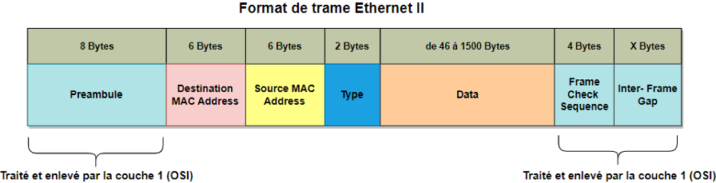
Avantages : simple et directement compatible avec IP, ARP, IPv6.
Utilisation : majoritaire aujourd'hui (> 95% des trames observées en réseau).
Exemples de trame Ethernet II :
Les exemples de types de trame les plus rencontrés :
Ce sont des entrées statiques (configurées manuellement).
VLANs et commutation :
Un LAN regroupe deux ou plusieurs équipements dans un réseau.
Un VLAN est un LAN Virtuel : un sous-groupe dans un LAN.
Les VLANs permettent aux administrateurs réseau de séparer facilement un réseau commuté unique en plusieurs groupes afin de répondre aux exigences fonctionnelles et de sécurité de leurs systèmes.
Fonctionalités
LAN
VLAN
Latence
Grande
Faible
Network Segmentation
Ne permet pas
Permet la segmentation
Broadcast Traffic
Sujet à la congestion du trafic
Réduit la congestion
Management
Simple (1 seul réseau)
Avancé (multiples réseaux)
Isolation
Manque d'isolation
Isolation entre plusieurs VLAN
Sécurité
Basique (basé sur les mesures externes au LAN)
Offre un contrôle de sécurité granulaire
Flexibilité
Limitée à l'infrastructure physique
Aucune modification de l'infrastructure nécessaire
Allocation des ressources
Inefficace
Améliore l'efficacité des ressources et du réseau
Domaine de défaillance*
Simple
Multiple
Types de VLANs : port-based VLAN et tagged VLAN :
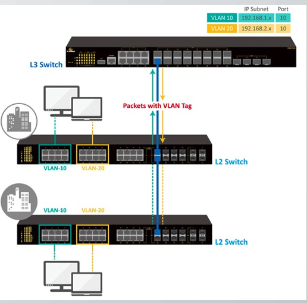
Pour que plusieurs VLANs puissent communiquer entre eux, un routeur est nécessaire.
Les routeurs entre les VLANs filtrent le trafic de diffusion, renforcent la sécurité du réseau, effectuent la synthèse des adresses et atténuent la congestion du réseau.
Il existe deux types de VLANs :
Les port-based VLANs (untagged).
Les tagged VLANs.
Port-based VLAN (untagged) :
Les VLANs non balisés sont basés sur les ports physiques d'un switch (appelés ports d'accès).
Aucune information supplémentaire n'est ajoutée à la trame Ethernet. Au lieu de cela, chaque port du commutateur estdéfini comme appartenant à un VLAN spécifique.
Cette approche divise un seul commutateur physique en plusieurs commutateurs logiques.
Si un périphérique est connecté à un port dans un seul VLAN, alors le port doit être non balisé.
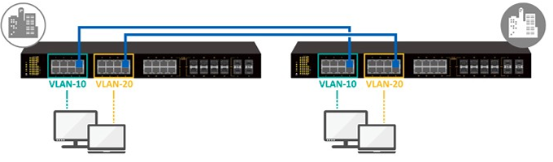
Tagged VLAN :
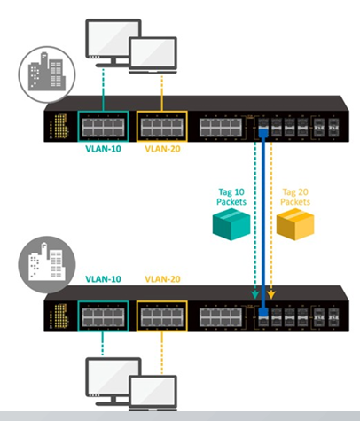
Les VLANs non balisés sont basés sur les ports physiques d'un switch (appelés ports d'accès).
Aucune information supplémentaire n'est ajoutée à la trame Ethernet. Au lieu de cela, chaque port du commutateur est défini comme appartenant à un VLAN spécifique.
Cette approche divise un seul commutateur physique en plusieurs commutateurs logiques.
Si un périphérique est connecté à un port dans un seul VLAN, alors le port doit être non balisé.
Switch et VLAN tagging (le format de trame DOT1Q (802.1Q)) :
En fonctionnement normal, le switch se contente de relayer la trame Ethernet telle quelle.
Mais, dans certains cas, le switch peut modifier le header de la trame notamment pour ajouter des champs 802.1Q (VLAN Tagging).
Bien entendu, chaque changement de l'en-tête nécessite le recalcule du champ FCS.
Pour marquer le VLAN, le switch modifie la trame pour y insérer le marquage 802.1Q.
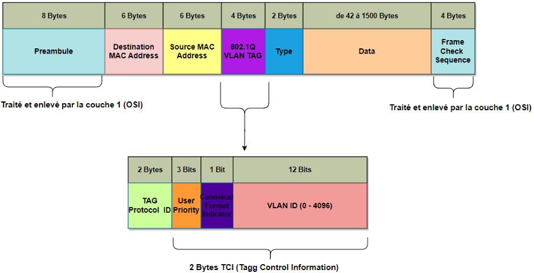
802.1Q Tag (4 octets) = TPID (2) + TCI (2)
TPID - Tag Protocol Idntifier (16 bits) :
Valeur : 0x8100.
Signifie que cette trame est une trame 802.1Q (tag VLAN).
Remplace temporairement l'EtherType original, repoussé après le tag.
Permet au switch de savoir que la trame contient un tag VLAN.
TCI - Tag Control Information (16 bits) :
TCI = Priority (3 bits) | DEI (1 bit) | VLAN ID (12 bits).
PCP : Priority Code Point (3 bits) :
Champ de priorité selon IEEE 802.1p (QoS layer 2).
Valeur de 0 à 7.
Permet le marquage de priorité sur le trafic (control, voice, video, best effort, etc.).
Exemples :
7 = Network control.
5 = Voice.
0 = Best effort.
DEI - Drop Eligible Indicator (1 bit) :
Anciennement appelé CFI (Canonical Format Indicator)
Permet d'indiquer qu'une trame peut être supprimé en cas de congestion.
0 = Non eligible.
1 = Eligible for drop.
Utile dans les architectures utilisant la congestion management / QoS.
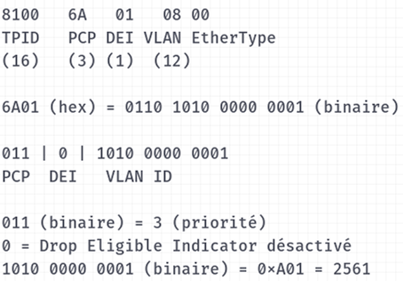
VLAN ID (12 bits) :
Identifiant de VLAN sur 12 bits → 4096 valeurs théoriques.
VLAN valides : 1 à 4094.
VLAN 0 : utilisé pour QoS sans changement de VLAN.
VLAN 4095 : réservé.
La plupart du temps c'est ce champ qui nous intéresse.
Exemple :
PCP = 3 → 011 (binaire).
DEI = 0.
VLAN ID = 0xA01 = 2561.
EtherType = 0x800 (IPv4).
Résumé : VLANs et switching :
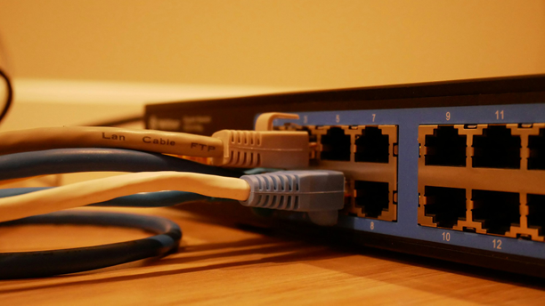
VLAN = segmentation logique au niveau 2.
VLAN nécessité la modification de l'en-tête Ethernet.
Types de ports :
Access : 1 VLAN.
Trunk : plusieurs VLAN (802.1Q).
Le switching peut être :
Inter-VLAN (nécessite le routage L3).
Intra-VLAN (L2 pur).
Introduction aux private VLANs (PVLANs) :
Les objectifs des PVLANs sont :
Renforcer l'isolation au sein d'un même VLAN.
Fonction avancée utilisée principalement dans les datacenters.
Permet de contrôler quelles machines peuvent communiquer entre elles.
Éviter la prolifération des VLANs (scalabilité).
Pourquoi les private VLANs ?
Les problèmes dans un VLAN classique sont :
Tous les hôtes peuvent se parler (risque de pivot/propagation).
Particulièrement dangereux pour :
Hébergeurs mutualisés.
Environnements cloud/virtualisation.
Racks "shared hosting".
→ PVLAN = isolation granulaire dans un même segment L2.
Types de ports dans un PVLAN :
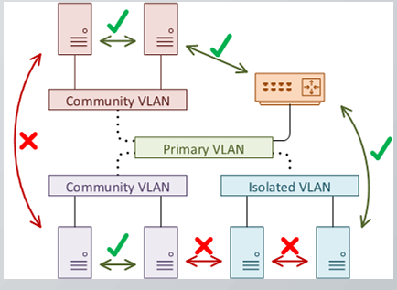
Primary VLAN :
VLAN parent - Transporte le trafic général.
Secondary VLANs (deux types de secondary VLANs) :
Isolated VLAN (isolé) :
Hôtes totalement isolés les uns des autres.
Peuvent parler uniquement au port promiscuous.
Community VLAN (communauté) :
Hôtes peuvent communiquer entre eux.
Mais pas avec les autres communautés.
Toujours accès au promiscuous.
Types de ports : comportement :
Promiscuous port :
Accès total vers tous les VLANs secondaires.
Typiquement le port du routeur, firewall, ou default gateway.
Isolated port :
Aucune communication entre ports isolated.
Communication uniquement vers promiscuous.
Cas typique : clients hébergés isolés.
Community port :
Communication interne dans la communauté.
Pas vers autres communautés.
Permet isolation horizontale.
Types de ports : cas d'usage et limites :
Cas d'usage typique :
Hébergement mutualisé (chaque VM isolée).
Datacenters cloud : isolation sans explosion du nombre de VLAN.
Multi-tenancy dans un réseau SDN, ACI, NSX.
Environnements DMZ : séparation Web/DB/App dans le même L2.
Limites :
Pas supporté par tous les switchs.
Complexité de troubleshooting.
Ne protège pas contre :
Attaques L3/L4.
Vulnérabilités applicatives.
Spanning Tree Protocol (STP) :
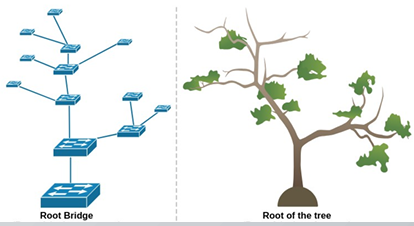
STP = protocole de couche 2 (IEEE 802.1D).
Objectif : éviter les boucles réseau dans un environnement commuté.
Les boucles L2 provoquent :
Tempêtes de broadcast.
Multiplication de trames.
MAC table instable.
STP garantit un chemin unique actif entre deux switchs.
Problème des boucles en L2 :
Ethernet ne possède pas de TTL → risque de boucles infinies.
Une trame peut circuler à l'infini dans un réseau bouclé.
Les broadcast/multicast se multiplient.
Le réseau devient inutilisable.
Solution : STP désactive certains ports pour créer un arbre logique sans boucle.
Sans STP - Problème des boucles :
Instabilité de la table CAM :
Le switch apprend les adresses MAC selon l'interface qui a vu la trame. En présence d'une boucle, la même MAC arrive sur plusieurs ports.
Résultat :
Flapping de MAC (MAC address flapping).
Entrées MAC mises à jour en permanence.
Switching imprévisible.
Performance catastrophe.
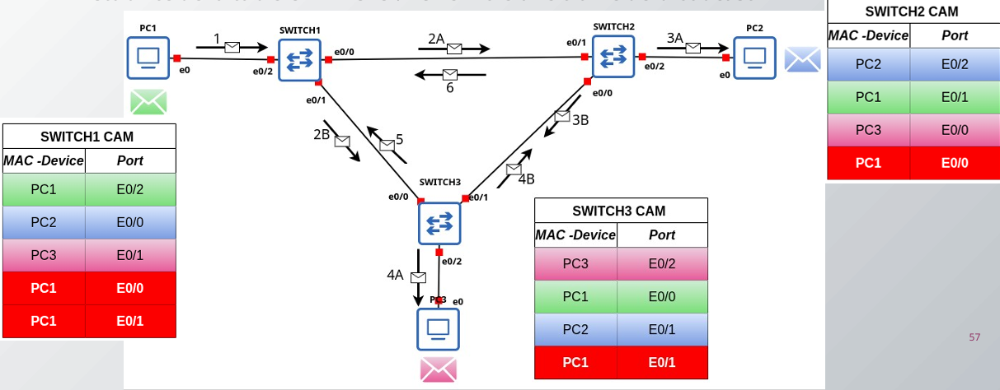
Tempêtes de broadcast (Broadcast Storm) :
Symptômes :
Perte de connectivité.
Latence extrême.
CPU à 100 % sur les switchs.
Impossible de faire du SSH/console/gestion SNMP.
Déconnexion de tous les hôtes.
Pourquoi ? Une trame broadcast se répète de manière exponentielle dans la boucle.
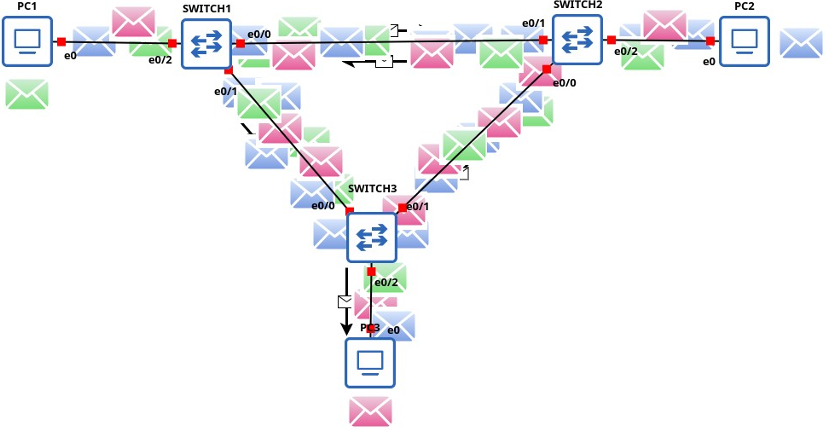
Les trames de broadcast circulent indéfinement dans le réseau causant ainsi la paralysie de tous les switchs.
Fonctionnement général du STP :
STP opère en quatre étapes :
Élection du Root Bridge.
Calcul du **chemin le plus court** pour tous les switchs.
Sélection des ports :
Root Port.
Designated Port.
Non-Designated Port (bloqué).
Mise en place de l'arbre sans boucle.
Élection du Root Bridgeed Port :
Le Root Bridge est le switch central de l'arbre.
Basé sur le Bridge ID :
Priority (modulable).
MAC Address.
Le switch avec le **plus petit Bridge ID** = Root Bridge.
**Best practice :** Définir manuellement le Root Bridge sur un switch central.
Les rôles de ports STP sont :
Root Port (RP) : Port le plus proche du Root Bridge.
Designated Port (DP) : Port désigné pour transférer le trafic vers un segment.
Blocked/Alternate Port : Empêche la boucle, reste en standby.
Ces rôles changent dynamiquement selon la topologie.
Un port STP peut être dans l'un des états suivants :
Disabled : Port inactif.
Blocking : Évite les boucles.
Listening : Analyse des BPDU.
Learning : Apprentissage MAC.
Forwarding : Port actif.
Durée de convergence classique : ~30 à 50 secondes.
STP - BPDU (Bridge Protocol Data Unit) :
Les switchs échangent des BPDU pour :
Élire le Root Bridge.
Maintenir la topologie.
Détecter les changements.
Les variantes modernes du STP sont :
RSTP (Rapid STP) - 802.1w :
Convergence rapide (< 3 secondes).
États simplifiés.
MSTP (802.1s) : Plusieurs instances STP pour plusieurs VLAN.
PVST /PVST+ (Cisco) : 1 instance STP par VLAN.
Sécurité de la couche 2 (attaques & contre-mesures) :
Introduction à la sécurité L2 :
La couche 2 (L2) est critique : commutation, VLAN, adressage MAC.
Souvent négligée → surface d'attaque réelle.
Attaques → impact : interception, déni de service, détournement de trafic.
Objectif : comprendre les attaques et les contre-mesures.
Pourquoi la couche 2 est vulnérable ?
Switchs supposent des utilisateurs "de confiance".
Protocole Ethernet → pas d'authentification.
Protocoles L2 souvent en clair.
Conception historique pour réseaux "localement sécurisés".
Typologie des attaques L2 :
MAC Flooding.
ARP Spoofing / ARP Poisoning.
DHCP Spoofing / DHCP Starvation.
Attaques STP (Spanning-Tree).
VLAN Hopping.
CDP/LLDP exploitation.
Attaques sur port security.
MAC Flooding :
Principe : Saturer la table CAM avec de fausses adresses MAC. Le switch passe en mode "fail-open". Diffuse le trafic → interception.
Impact : perte de performance, sniffing.
Contre-mesures : Port Security (limiter MAC par port). Storm Control. Surveillance CAM (SNMP, logs, syslog).
ARP Spoofing / Poisoning :
Principe : L'attaquant envoie de fausses réponses ARP. Redirection du trafic. MITM. Usurpation IP...
Contre-mesures : Dynamic ARP Inspection (DAI). DHCP Snooping (base de confiance pour DAI). ARP static pour équipements critiques. Monitoring ARP anomalies.
DHCP Starvation & Spoofing :
Principe : DHCP Starvation : épuisement du pool IP. DHCP Spoofing : l'attaquant se fait passer pour serveur DHCP.
Impact : Starvation (DOS - utilisateurs ne peuvent plus obtenir d'IP (utiliser le réseau)). Spoofing → MITM.
Contre-mesures : DHCP Snoofing (trusted/untrusted ports). Rate-limit sur requêtes DHCP. Isolation des ports utilisateurs, Port-security.
Attaques STP (Spanning-Tree) :
Principe : L'attaquant se fait élire root bridge en envoyant des BPDU forgées.
Impact : Redirection de trafic - instabilité du réseau.
Sécurisation des protocoles de gestion (on verra plus loin dans le cours).
Conclusion : sécurité de la couche 2 :
La couche 2 est un maillon faible si non protégée.
Les attaques sont souvent simples mais très efficaces.
Les contre-mesures existent : activer, tester, monitorer.
Sécuriser L2 est fondamental avant L3 et au-delà.
Architecture, normes (standards) et protocoles :
Le modèle de référence OSI :
OSI signifie "Open Systems Interconnection" (interconnexion de systèmes ouverts), le terme "Open Systems" faisant référence aux spécifications entourant la structure du modèle ainsi qu'à sa mise à disposition publique non propriétaire.
Tout le monde peut construire les logiciels et le matériel nécessaires pour communiquer au sein de la structure OSI.
Le modèle de référence OSI est un cadre conceptuel qui permet de comprendre et de normaliser les communications entre différents systèmes informatiques.
Le modèle de référence OSI définit un modèle de communication de données à sept couches ayant chacune un rôle précis, avec le transport physique à la couche inférieure et les protocoles d'application à la couche supérieure.
Ce modèle, illustré à la figure 1-1, est largement adopté comme base de compréhension du fonctionnement d'une pile de protocoles de réseau et comme référence pour l'élaboration de protocoles d'applications réseau.
Figure 1-1 : Le modèle OSI.
Chaque couche fournit un ensemble de fonctions à la couche supérieure et, à son tour, s'appuie sur les fonctions fournies par la couche inférieure. Bien que les messages ne puissent passer verticalement à travers la pile d'une couche à l'autre, d'un point de vue logique, chaque couche communique directement avec sa couche homologue sur d'autres noeuds.
Figure 1-2 : Relations détaillées entre les couches.
Les sept couches OSI utilisent diverses formes d'informations de contrôle pour communiquer avec leurs couches homologues dans d'autres systèmes informatiques et avec les couches adjacentes au sein du même système.
Ces informations de contrôle consistent en des demandes et instructions spécifiques échangées entre les couches OSI. Les informations de contrôle prennent généralement l'une des deux formes suivantes :
Les en-têtes : ajoutés à l'avant des données transmises par les couches supérieures.
Les données : ajoutées à l'arrière des données transmises par les couches supérieures.
Les en-têtes et les données sont des concepts relatifs, qui dépendent de la couche qui analyse l'unité d'information à ce moment-là.
Par exemple, au niveau du réseau, une unité d'information se compose d'un en-tête de couche 3 et de données, appelées charge utile. Cependant au niveau de la couche liaison de données (couche 2), toutes les informations transmises par la couche réseau (l'en-tête de la couche 3 et les données) sont traitées simplement comme des données. En d'autres termes, la partie données d'une unité d'information à une couche OSI donnée peut potentiellement contenir des en-têtes et des données de toutes les couches supérieures. C'est ce qu'on appelle l'encapsulation.
La figure 1-3 montre l'en-tête et les données d'une couche qui sont encapsulées dans l'en-tête de la couche immédiatement inférieure.
Figure 1-3 : Encapsulation des unités d'information à travers les couches OSI.
Les sept couches sont les suivantes :
Couche 7 - Application : La couche application joue essentiellement le rôle d'interface avec l'utilisateur final. C'est la couche où se produit l'interaction entre les applications réseau telles que le courrier électronique, le transfert de fichiers (FTP), le web (HTTP), l'émulation de terminal, etc.
Couche 6 - Présentation : La couche Présentation est responsable du formatage des données et de cryptage entre applications, c'est-à-dire la traduction des formats de communication (syntaxe) entre les applications, parmi les formats, on trouve HTML, MIME, ASCII, EBCDIC...
Un autre exemple des actions qui se produisent dans cette couche est le cryptage et le décryptage des données dans Pretty Good Privacy (PGP).
Rôle : La couche présentation traduit les données pour les présenter.
Couche 5 - Session : La couche session est responsable de l'établissement et du maintien de sessions entre applications réseau. Exemple : lorsqu'un utilisateur télécharge un fichier volumineux en utilisant le protocole HTTP, et qu'au cours du téléchargement une erreur de communication se produit, c'est cette couche qui permet la reprise du téléchargement au point où le téléchargement s'est arrêté évitant ainsi de recommencer le téléchargement depuis le début.
Rôle : La couche session gère et synchronise les dialogues entre les applications des deux ordinateurs.
Couche 4 - Transport : La couche transport est responsable du mécanisme de transport logique, qui comprend des fonctions de gestion de flux et de la fourniture d'une livraison fiable et non fiable de bout en bout (entre les hôtes). On trouve à cette couche les protocoles TCP et UDP.
TCP (protocole de contrôle de transmission) a un mécanisme qui fournit un niveau de contrôle d'erreur et de fiabilité (par le biais de numéros de séquence). Contrairement à TCP, le protocole de datagramme utilisateur (UDP) est un protocole non fiable ne disposant pas de la surcharge supplémentaire qui assure le contrôle des erreurs et la fiabilité comme TCP.
Processus : Les données sont segmentées pour faciliter leur transmission.
Couche 3 - Réseau : La couche réseau définit l'adressage logique des interfaces, les décisions de routage sont prises en fonction de l'emplacement de l'adresse de protocole Internet (IP) en question. Par exemple, les adresses IP établissent des topologies logiques distinctes, appelées sous-réseaux. En appliquant cette définition à l'environnement d'une station de travail, la station de travail détermine l'emplacement d'une station de travail, la station de travail détermine qui lui est associé par l'intermédiaire de la couche réseau. Les fonctions de livraison de paquets et de routage sont également définies / implémentées par l'intermédiaire de la couche réseau.
Rôle : La couche réseau détermine le meilleur chemin pour acheminer les paquets de données à travers le réseau. Il gère le routage et l'adressage.
Processus : Chaque segment est encapsulé dans un paquet avec une adresse IP source et une adresse IP destination.
Couche 2 - Liaison de données : La couche liaison de données fournit l'encapsulation en trame, le contrôle du flux et des erreurs au niveau de l'interface réseau utilisé. Une caractéristique importante de cette couche est que les informations qui lui sont appliquées sont utilisées par les équipements pour déterminer si le paquet doit être traité par cette couche (c'est-à-dire passer à la couche 3 ou être rejeté). Dans le cas des interfaces de type Ethernet, la couche liaison de données attribue également une adresse de contrôle d'accès au média (MAC: Medium Address Control).
Par exemple, sur un segment de réseau local Ethernet, toutes les trames sont diffusées et reçues par chaque équipement du segment. Seul l'appareil dont l'adresse MAC est contenue dans la trame de cette couche sur la trame; tous les autres ne le font pas. Il est important de noter ici que les interfaces série ne nécessitent pas d'adresses de station uniques de la couche 2, telles que les adresses MAC, à moins qu'il ne soit nécessaire d'identifier l'extrémité réceptrice dans un réseau multipoint. Sur les réseaux qui ne sont pas conformes aux normes IEEE 802 mais au modèle de référence OSI, l'adresse de noeud est appelée adresse de contrôle de liaison de données (DLC : Data Link Control Address). Par exemple, dans Frame Relay, cette adresse de couche 2 est connue sous le nom d'identificateur de connexion de liaison de données (DLCI : Data Link Connection Identifier).
Rôle : Cette couche assure la communication directe, fiable et sécurisée entre deux dispositifs sur le même réseau local. Elle assure une connexion sans erreur pour la transmission des trames.
Processus : Les paquets sont encapsulés dans des trames et reçoivent une adresse MAC source et destination pour pouvoir être envoyés.
Couche 1 - Physique : La couche physique est la couche la plus basse du modèle de référence OSI. Elle est la plus proche du support physique du réseau. Cette couche est chargée de définir les informations relatives au matériel physique, telles que les spécifications électriques, mécaniques et fonctionnelles pour connecter et transmettre les signaux entre deux systèmes. La couche physique se compose de trois domaines principaux : les supports de transmission (câbles, fibres optiques, ...), les connecteurs (RJ45, SFP, BNC...) et le codage (NRZ, NRZI, MLT-3, HDB3, Manchester, Manchester Différentiel...).
Rôle : La couche physique est responsable de la transmission réelle des bits sur le réseau via des câbles, signaux radio, fibre optique, etc.
Processus : Les trames sont converties en signaux électriques, optiques, ou radio fréquences, qui sont ensuite transmis sur le support physique.
Comprendre le modèle OSI aide à identifier et résoudre des problèmes réseau. Il reste un outil pédagogique.
Le modèle OSI comparé au modèle TCP/IP :
Le modèle TCP/IP est un modèle pratique qui répond à des problèmes de communication spécifiques et repose sur des protocoles normalisés. En revanche, le modèle OSI est un cadre complet, indépendant des protocoles, conçu pour englober diverses méthodes de communication en réseau.
Le modèle TCP/IP (Transmission Control Protocol/Internet Protocol) comporte cinq couches :
Couche application.
Couche transport.
Couche d'accès au réseau.
Couche d'interface réseau.
Couche physique (matérielle).
Ce modèle peut sembler radicalement différent du modèle OSI, principalement parce que certaines fonctions sont englobées dans une seule couche : la couche application.
Le modèle TCP/IP fournit aux utilisateurs les normes physiques, les fonctions de transport, l'interface réseau et les fonctions d'interconnexion qui correspondent aux quatre premières couches du modèle OSI. En d'autres termes, les fonctions réalisées dans les couches Application, Présentation et Session du modèle OSI sont toutes réalisées dans la couche application du modèle TCP/IP.
La figure 1-4 montre la correspondance entre les couches du modèle OSI et celles du modèle TCP/IP.
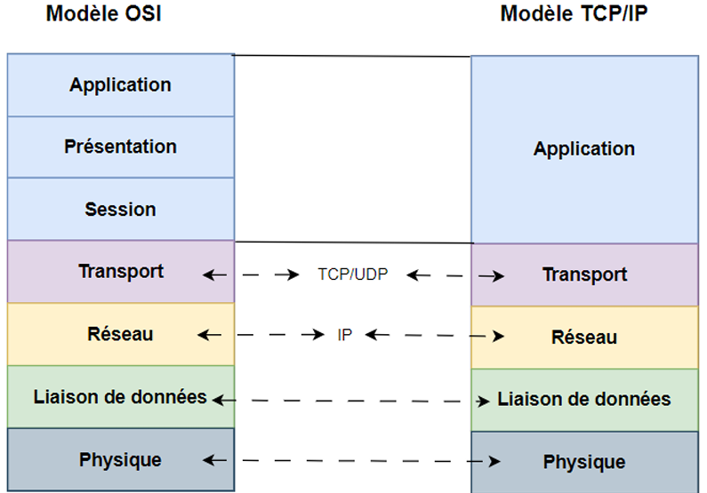
OSI est un modèle théorique tandis que TCP/P est un modèle pratique.
TCP/IP regroupe ceryaines couches du modèle OSI pour plus de simplicité.
Les deux modèles sont complémentaires.
Les interfaces d'interconnexion (liaisons de données (couche 2)) :
TCP/IP, en tant que suite de protocoles Internet, peut fonctionner sur un grand nombre de réseaux physiques.
TCP/IP s'appuie sur des protocoles et des interfaces qui permettent au trafic de circuler sur différents types de réseaux physiques. Le plus courant et le plus largement utilisé de ces protocoles est, bien entendu "Ethernet".
Dans ce chapitre, nous allons voir le standard "Ethernet" et la norme IEEE 802.3. Bien entendu, il existe un grand nombre de protocoles de couche 2, mais la couverture de tous ces protocoles dépasse le cadre de ce cours. Cependant, voici une liste non exhaustive de ces protocoles :
ARCnet
Asynchronous Transfer Mode (ATM)
Econet
Fiber Distributed Data Interface (FDDI)
Frame relay
High-Level Data Link Control (HDLC)
LattisNet
Link Access Procedures, D channel (LAPD)
Serial Line Internet Protocol (LAPD)
Token ring
Point-to-point protocol (PPP)
...
La plupart de ces protocoles sont devenus obsolètes dû à l'adoption massive du standard "Ethernet".
Formats de trame :
La trame Ethernet est utilisée pour encapsuler les données et les transmettre sur le réseau local.
La trame Ethernet est composée de :
Préambule (+ SOF) (8 octets - non visibles lors de la capture - récupéré / enlevé par la couche 1)
adresse destination (6 octets)
adresse source (6 octets)
type/longueur (2 octets)
données (46 à 1500 octets)
contrôle d'erreur(4 octets - non visibles lors de la capture - récupéré / enlevé par la couche 1)
Avantages : simple et directement compatible avec IP, ARP et IPv6.
Il existe deux formats : Ethernet et IEEE 802.2. Ces deux formats de trame (ou normes) peuvent être utilisés sur le même média physique (câble coaxial Ethernet, paires torsadées, fibres optiques...).
La norme publiée en 1978 par Xerox Corporation, Intel Corporation et Digital Equipment Corporation, généralement appelée Ethernet (ou DIX Ethernet) et plus tard standardisé sous la norme 802.3.
La norme internationale IEEE 802.2 qui ajoute des services de qualités à la sous-couche supérieure de la norme 802.3 aussi connue sous le nom de la "norme 802.3 LLC".
Voici une description du format de trame décrit par la spécification originale Ethernet Version II telle que publiée par DEC, Intel et Xerox. Comme la spécification 802.3, la spécification de la version II définit un en-tête de liaison de données composé de 14 octets (6 + 6 + 2) d'informations, mais la spécification de la version II ne spécifie pas d'en-tête LLC.
Les champs Préambule et FCS (Frame Check Sequence) ont été supprimés car ils sont traités au niveau de la couche 1 par les pilotes des périphériques. La figure 2-1 montre le format de la trame Ethernet II.
Décalage 0-5 : l'adresse de destination : Les six premiers octets d'une trame Ethernet constituent l'adresse de destination. L'adresse de destination indique à quel adaptateur la trame de données est envoyée. Une adresse de destination composée uniquement de 1 indique un message de diffusion qui est lu par tous les adaptateurs Ethernet qui reçoivent la trame. Les trois premiers octets de l'adresse de destination sont attribués par l'IEEE au fournisseur de l'adaptateur et sont spécifiques à ce dernier. Voir la page Adresse MAC pour plus d'informations. Le format de l'adresse de destination est identique dans toutes les implémentations d'Ethernet.
Décalage 6-11 : l'adresse source : Les six octets suivants d'une trame Ethernet constituent l'adresse source. L'adresse source indique de quel adaptateur provient le message. Comme pour l'adresse de destination, les trois premiers octets indiquent le fournisseur de la carte.
Décalage 12-13 : l'Ethertype : L'adresse source est suivie d'un champ de 2 octets appelé Ethertype. L'Ethertype est analogue aux SAP de la trame 802.3 en ce sens qu'il spécifie la mémoire tampon dans laquelle placer cette trame.
Données = 46-1500 octets : L'Ethertype est suivi de 46 à 1500 octets de données, généralement constitués d'en-têtes de couche supérieure tels que TCP/IP ou IPX, puis des données de l'utilisateur proprement dites.
La norme IEEE 802.2 insère 3 champs pour le contrôle de liaison logique, après le champ EtherTypes/longueur. La figure 2-2 montre le format d'une trame 802.2 LLC.
Figure 2-2 : Format d'une trame IEEE 802.2 LLC
La différence entre les deux normes réside dans l'utilisation de l'un des champs de l'en-tête, qui contient un numéro de type de protocole pour Ethernet et la longueur des données de la trame pour l'IEEE 802.3.
Le champ "type" dans Ethernet est utilisé pour distinguer les différents protocoles encapsulés dans la trame et permet leur coexistence sur le même média physique.
La longueur maximale d'une trame Ethernet est de 1526 octets. Cela signifie que la longueur du champ de données peut atteindre 1500 octets.
La longueur des données (du champ "Data") pour IEEE 802.3 est également limitée à 1500 octets pour les réseaux 10 Mbps, mais elle est différente pour les autres vitesses de transmission.
La valeur du champ "type/longueur" est utilisée pour différencier les trames :
Si la valeur est inférieure ou égale à 1500, le champ signifie "longueur" (indique la longueur des données), et la trame est donc IEEE 802.3.
Si la valeur est supérieure à 1500, le champ signifie "type" (indique le numéro de type "EtherType" de protocole transporté dans la partie "data" de la trame) et la trame est donc Ethernet.
Par conséquent, la couche physique Ethernet et la couche physique IEEE 802.3 sont compatibles. Cependant, la couche liaison de données Ethernet et la couche de liaison de données IEEE 802.3/802.2 sont incompatibles.
La couche de contrôle de liaison logique (LLC : Logical Link Control) 802.2 au-dessus de l'IEEE 802.3 utilise un concept connu sous le nom de point d'accès au service de liaison (LSAP : Link Service Access Point), qui utilise un en-tête DSAP et SSAP de 3 octets. DSAP et SSAP signifient point d'accès au service de la destination et de la source.
Les numéros de ces champs sont attribués par un comité de l'IEEE.
Dans la trame IEEE 802.3, le type de protocole qu'elle transporte est indiqué dans l'en-tête 802.2 LLC.
En raison du nombre croissant d'applications utilisant l'IEEE 802 comme couches de protocole inférieures, une extension a été apportée au protocole IEEE 802.2 sous la forme du protocole d'accès au sous-réseau (SNAP : Subnetwork Access Protocol) (voir figure 2-3).
Il s'agit d'une extension de l'en-tête LSAP de la figure 2-2, et son utilisation est indiquée par la valeur 170 dans les champs SSAP et DSAP de la trame LSAP (figure 2-3).
Commutateur Ethernet :
Les objectifs de la commutation sont :
performance
isolation des collisions
segmentation logique
Les commutateurs Ethernet relient plusieurs appareils entre eux en les câblant physiquement au même commutateur ou à des appareils connectés à un autre commutateur relié au même réseau. Ces câbles comprennent les câbles coaxiaux, les câbles à fibres optiques et les câbles Ethernet à paires torsadées.
Lorsqu'un appareil est connecté à un port, le commutateur Ethernet gère le flux de données entre cet appareil et les autres appareils. Le processus de commutation dirige les données entrantes et sortantes vers le bon port du commutateur en fonction du port de l'appareil émetteur et des adresses MAC de l'émetteur et du destinataire. Les adresses MAC de l'expéditeur et du destinataire sont incluses dans les données envoyées dans une trame Ethernet.
Chaque appareil compatible Ethernet possède une adresse physique codée en dur, appelée adresse MAC, cette adresse physique est utilisée par le commutateur pour identifier l'appareil de manière unique.
Lorsqu'un comutateur reçoit une trame Ethernet, il enregistre l'adresse MAC de l'appareil émetteur et le port auquel il est connecté dans une table locale appelée table d'adresses MAC (MAC Address Table). Le processus de commutation vérifie ensuite la table d'adresses MAC pour voir si l'adresse MAC de destination est connectée au même commutateur. Si c'est le cas, le commutateur transmet la trame au port de destination connu. Dans le cas contraire, le commutateur diffuse la trame à tous les ports et attend une réponse.
Si le commutateur est connecté directement à l'appareil de destination, celui-ci accepte la trame de données, répond et la transmission est terminée. Si l'appareil est connecté à un autre commutateur, le commutateur suivant répète le processus de recherche et de transmission jusqu'à ce que la trame atteigne la destination prévue.
On dit que les commutateurs agissent au niveau de la couche 2, cela veut dire qu'ils sont capables de modifier la trame Ethernet pour ajouter ou modifier l'un ou l'autre champ de la trame Ethernet. La figure 2-5 montre une insertion du marquage 802.1Q (VLAN Tagging).
Labo 1 : construction d'un petit réseau :
Objectif :
L'objectif de ce premier labo est de se familiariser avec l'environnement de simulation des réseaux (GNS3) et de mettre en place un petit réseau tout en introduisant les notions de sécurité des réseaux.
Scénario :
Vous êtes un administrateur réseau/sécurité junior, vous êtes engagé pour mettre en place et gérer le réseau d'une petite entreprise.
Le réseau est composé d'un routeur, d'un switch et de trois PC. Vous devez permettre aux utilisateurs d'accéder à Internet.
En tant qu'administrateur, vous devez protéger votre PC contre les éventuelles attaques depuis les PC utilisateurs (ils ne doivent pas voir votre PC).
Vous devez faire en sorte que si un équipement autre que ceux installés par vos soins ne soit pas autorisé.
configure terminal
access-list 100 deny ip 192.168.2.0 0.0.0.255 192.168.3.0 0.0.0.255
access-list 100 permit ip any any
interface e0/1.2
ip access-group 100 in
exit
end
write memory
On peut tester depuis PC1 la commande suivante et ça doit échouer et idem depuis le PC2 :
ping <IP PC3>
Du PC3 vers les PC1 et PC2, c'est possible grâce à l'ACL asymétrique.
Le PC1 et le PC2 peuvent quand même aller sur Internet.
Sécurité supplémentaire requise :
Tu dois aussi appliquer sur le switch : Port Security :
Pour capturer un paquet, dans la topologie GNS3, clique-droit sur le lien "Start capture" et choisit Wireshark si installé. Tu pourras faire des pings depuis PC1 et tu verras alors ICMP traverser.
N'oublies pas de "Stop capture" quand tu as fini (dans Wireshark ou dans GNS3).
Dans chaque équipement IOS, il faut taper la commande :
write memory
Dans GNS3, il faut faire "File → Save project".
On va faire un DHCP snooping & ARP sur Switch1 (si IOS supporte) :
configure terminal
ip dhcp snooping
ip dhcp snooping vlan 2,3
! Marquer trunk vers router comme trusted
interface Ethernet0/0
ip dhcp snooping trust
! Dynamic ARP inspection (si supporté)
ip arp inspection vlan 2,3
end
write memory
Certaines images IOU L2 n'ont pas toutes les features (DHCP snooping/DAI). Si elles manquent, saute ces étapes ou utilise une image plus complète.